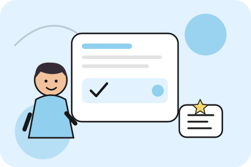

Программа под ваши цели и уровень
На индивидуальных занятиях преподаватель может подробнее разбирать вопросы, которые возникают именно у вас, подбирать дополнительные примеры и менять тип заданий в зависимости от результата. Новые конструкции сразу используются в речи и письменных упражнениях. Благодаря этому обучение связывает объяснение материала с его практическим применением.
Как строится индивидуальное обучение
В начале важно определить, для чего вам нужен английский и что уже получается использовать самостоятельно. Одному ученику необходимо освоить базовые конструкции и научиться строить простые фразы, другому — говорить свободнее, третьему — подготовиться к собеседованию или увереннее использовать язык в профессиональной среде. От этих задач зависит содержание программы и распределение времени между разными навыками.
Программа может меняться по мере того, как вы осваиваете новые темы. Например, если вы уже умеете рассказывать о себе, можно перейти к описанию прошлого опыта, обсуждению планов и более развёрнутым ответам. Если при разговоре сложно быстро подобрать слова, полезно уделить больше времени диалогам и повторению устойчивых выражений.
Как проходит занятие
Работа строится вокруг конкретной темы или навыка. Преподаватель объясняет материал на примерах, помогает применить его в упражнениях и диалогах, а затем обращает внимание на ошибки и способы их исправления. Постепенно знакомые конструкции используются в новых ситуациях, чтобы ученик мог самостоятельно выбирать подходящие слова и формулировки.
На занятии можно разбирать ситуации, с которыми вы сталкиваетесь в повседневной жизни или ожидаете столкнуться в будущем. Это может быть разговор с иностранным коллегой, обсуждение условий поездки, переписка или подготовка к выступлению. Между занятиями полезно возвращаться к изученному материалу и выполнять небольшие задания.
Что даст индивидуальный формат
Вы получите возможность двигаться в подходящем темпе и уделять больше внимания тем задачам, которые важны именно вам. Постепенно станет легче замечать собственные затруднения, исправлять ошибки и использовать английский в нужных ситуациях. Индивидуальный формат также помогает понимать, какие темы уже освоены, что требует повторения и какие навыки стоит развивать дальше. Скорость прогресса зависит от начального уровня, регулярности занятий и времени на самостоятельную практику.